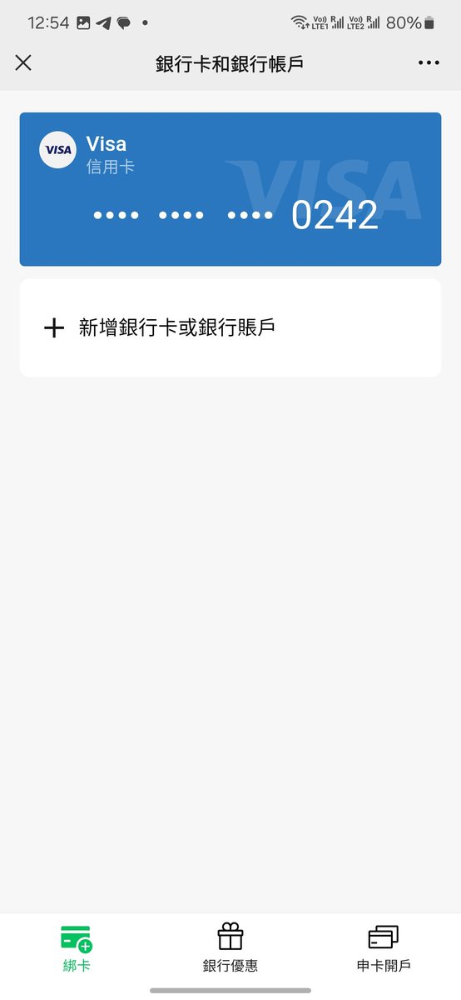

RedFox（2代目）🏳️⚧️🇲🇴🇭🇰
@FoxRed695449
@kiwiwwzzi @huihui71388030 @JiaweiShen96969 你说的对，但我1月份的考试季考了3个a
以及我发我银行账户也没求人投喂啊，单纯发着玩玩
有家长的信用卡副卡又不缺钱

ki
@kiwiwwzzi
@huihui71388030 @FoxRed695449 @JiaweiShen96969 看了他主页很久得知他是性别男，药娘跨性别（？不敢完全肯定很大概率是）有精神病史，公开自己银行账号支付宝微信收款码想求人转账投喂，这么多buff叠加 很难评 无非就是在港读书的中二小屁孩罢了 跟他同学比大概就是视频里职高生吧